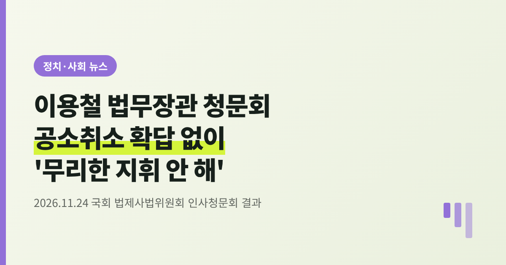
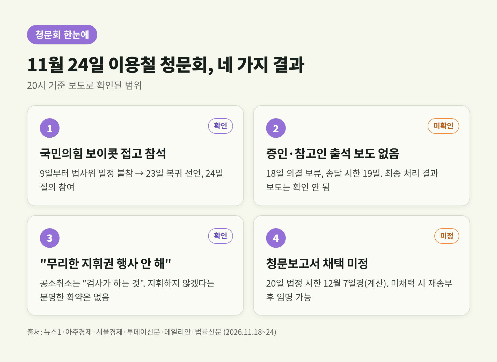
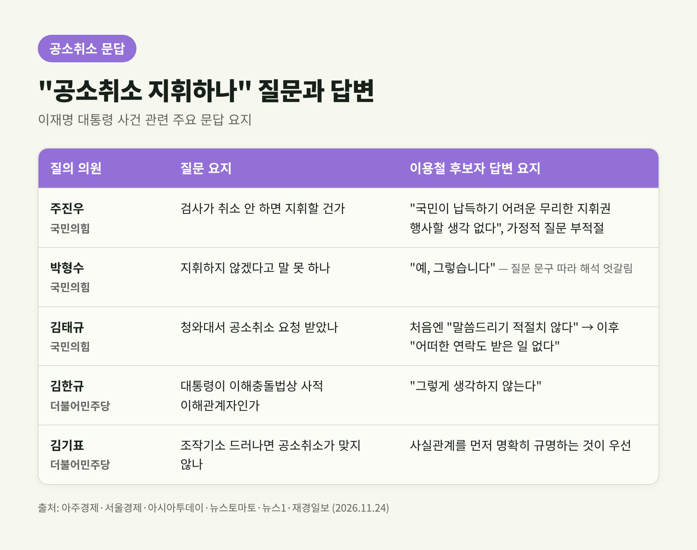
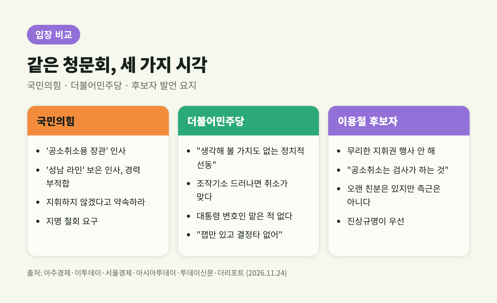
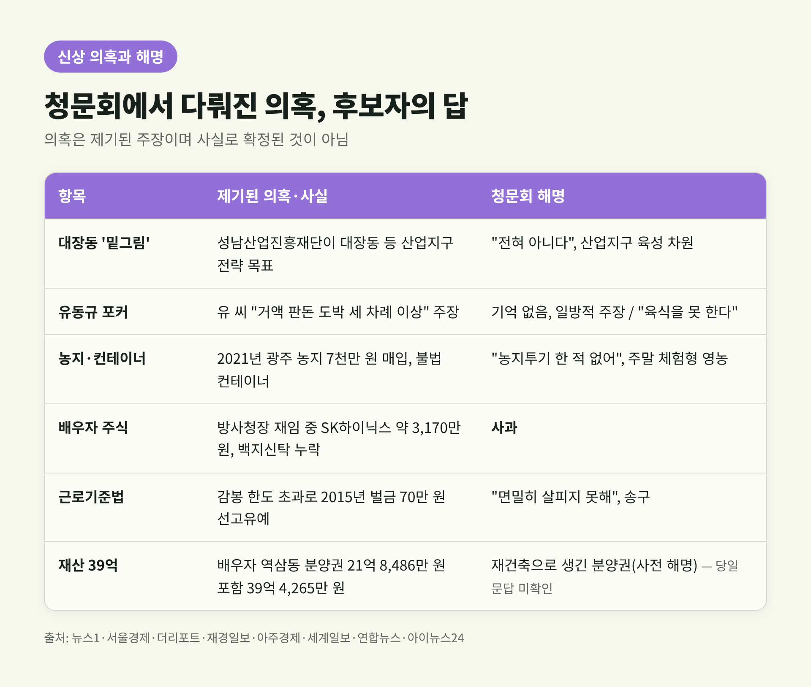
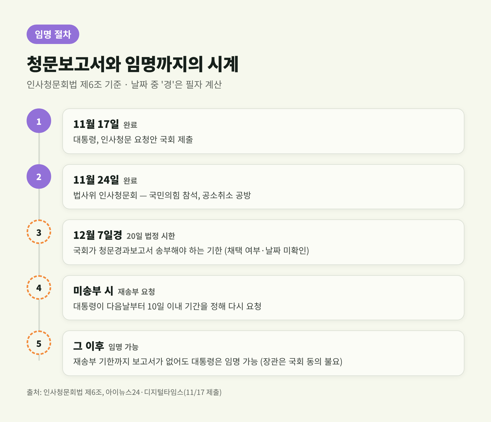

이용철 법무장관 청문회, 공소취소 확답 없이 '무리한 지휘 안 해'

오늘은 11월 24일 국회 법제사법위원회에서 열린 이용철 법무부 장관 후보자 인사청문회에서 실제로 무엇이 오갔는지 정리해 보겠습니다. 어제 쟁점을 미리 짚어 드렸다면, 이번 글은 청문회장에서 나온 발언과 공방, 그리고 그 결과에 집중합니다.
먼저 세 줄로 요약합니다.
- 국민의힘은 보이콧을 접고 청문회에 참석했습니다. 쟁점은 하루 종일 '이재명 대통령 사건 공소취소'였습니다.
- 이 후보자는 "국민이 납득하기 어려운 무리한 지휘권을 행사할 생각은 없다"는 말을 반복했습니다. 다만 공소취소를 지휘하지 않겠다는 분명한 확약은 하지 않았습니다.
- 20시 현재 청문경과보고서 채택 여부는 보도로 확인되지 않습니다. 법정 시한상 12월 초·중순 사이에 임명 여부가 판가름 날 전망입니다.

■ 오늘 청문회에서 무슨 일이 있었나
청문회는 24일 오전 10시 법사위 전체회의로 시작됐습니다. 같은 날 국회에서는 KBS 사장 후보자 청문회도 함께 열렸습니다.
가장 먼저 눈에 띈 것은 국민의힘의 복귀입니다. 국민의힘 법사위원들은 '조작기소 특검법' 처리에 반발해 지난 9일부터 법사위 일정을 보이콧해 왔습니다. 18일 청문회 실시계획서를 채택할 때도 자리에 없었습니다. 그러다 23일 오후 기자회견을 열고 복귀를 알렸습니다. "청문회는 공소취소 특검법의 연장선"이라는 이유였습니다. 법사위를 떠난 이유와 돌아온 이유가 같다는 설명이었습니다.
증인·참고인 문제는 끝내 정리되지 않은 것으로 보입니다. 18일 출석요구 안건은 의결이 보류됐고, 야권은 김현지 대통령비서실 제1부속실장을 증인 후보로 거론했습니다. 인사청문회법상 출석요구서는 출석일 5일 전까지 송달돼야 하므로, 24일 청문회 기준 시한은 19일이었습니다. 오늘 청문회를 다룬 보도들에서는 증인이나 참고인이 출석했다는 내용을 찾을 수 없었습니다. 다만 증인 채택이 최종적으로 어떻게 처리됐는지 밝힌 보도도 확인되지 않아, 여기서는 '출석 보도 없음'까지만 적어 둡니다.
후보자는 모두발언에서 검찰개혁의 안착을 강조했습니다. "어렵게 이룬 검찰개혁이 국민 불편과 불안으로 이어진다면 개혁의 진정성은 퇴색될 것"이라고 말했습니다(투데이신문). 지난 10월 출범한 공소청이 범죄 대응과 국민 보호에 소홀하지 않도록 하겠다는 다짐도 덧붙였습니다.
■ 하루 종일 이어진 '공소취소' 문답
질의의 대부분은 한 가지 질문으로 모였습니다. 장관이 되면 이재명 대통령 사건의 공소취소를 지휘할 것인가.

국민의힘 주진우 의원이 먼저 물었습니다. 검사가 공소를 취소하지 않으면 지휘할 생각이 있느냐는 질문이었습니다. 후보자는 "국민이 납득하기 어려운 무리한 지휘권을 행사할 생각은 없다"고 답했습니다. "공소취소는 검사가 하는 것"이라며, 예단을 전제로 한 가정적 질문에는 답하기 어렵다고 했습니다. 주 의원은 "공소취소하겠다는 말로 들린다"고 받아쳤습니다. 정성호 전 장관보다 후퇴한 입장이라는 지적도 나왔습니다.
이 비교에는 근거가 있습니다. 정 전 장관은 지난 3월 "특정 사건의 공소 취소를 지휘할 의도도 전혀 없고, 생각 자체가 전혀 없다"고 말했습니다(뉴스핌). 예전 장관은 지휘 의사 자체를 부인했습니다. 지금 후보자는 지휘의 '적절성'을 기준으로 답했습니다. 뉴스핌은 이를 두고 발언 수위가 달라졌다고 평가했습니다.
가장 해석이 엇갈린 장면은 국민의힘 간사 박형수 의원과의 문답입니다. 서울경제는 박 의원이 "공소 취소를 지휘하지 않겠다는 얘기를 못 하느냐"고 묻자 후보자가 "예, 그렇습니다"라고 답했다고 전했습니다. 이 문장대로라면 '그렇게 말할 수 없다'는 뜻으로 읽힙니다. 반면 아시아투데이와 아주경제는 질문을 '공소취소는 검사에게 맡기고 장관은 지휘하지 않겠다고 말할 수 없느냐'는 취지로 전하며, 후보자가 "예"라고 답했다고 보도했습니다. 같은 "예"를 두고 지휘 포기로 보는 시각과 여지를 남긴 것으로 보는 시각이 함께 있는 셈입니다. 서울경제도 이를 '모호한 답변'으로 정리했습니다. 이 글에서는 어느 쪽으로도 단정하지 않겠습니다.
국민의힘 김태규 의원은 지명 과정에서 청와대로부터 공소취소 요청을 받았느냐고 물었습니다. 처음에는 "그건 말씀드리기가 적절하지 않은 것 같다"며 답을 피했습니다. 재차 묻자 "인사와 관련된 내용"이라는 취지로 같은 답을 되풀이했습니다(아주경제). 이후 질의가 이어지면서 "청와대에서 어떠한 연락도 받은 일이 없다", "공소취소와 관련된 점에 대해선 연락받은 바가 없다"고 정리했습니다(뉴스1).
후보자는 특검을 바라보는 시각도 밝혔습니다. 특검의 목적을 "공소청에 대한 민주적 통제"로 설명했습니다(뉴스1). 주진우 의원이 특검을 "이재명 탈옥 특검"이라고 부르자, 무죄추정 원칙을 들어 그 표현에는 동의하기 어렵다고 반박했습니다(재경일보).
■ 여야는 같은 장면을 어떻게 봤나
공소취소를 둘러싼 여야의 시각은 정반대였습니다.

국민의힘은 이번 지명을 '공소취소용 인사'로 규정했습니다. 윤상현 의원은 공소취소를 위해 낙점된 것 아니냐고 따졌고, 후보자는 "오해"라고 답했습니다. 곽규택 의원은 최근 경력이 법무부 장관과 맞지 않는 '보은 인사'라고 비판했습니다. 후보자는 노무현 정부 법무비서관 시절 검찰개혁을 먼저 의제로 올렸다며 정책 경력으로 맞섰습니다. 김민전 의원은 후보자를 '성남 라인'의 출발점이라고 불렀습니다. 후보자는 성남에서 일했고 대통령을 아는 것은 맞지만, 측근이 아니라 지인이라고 선을 그었습니다.
더불어민주당은 이를 '정치적 선동'이라며 후보자를 엄호했습니다. 김기표 의원은 흠잡을 것이 없으니 대통령과의 인연을 공격한다고 주장했습니다. 동시에 국가기관의 조작기소가 드러나면 공소취소가 맞다는 입장도 분명히 했습니다. 박균택 의원은 후보자가 대통령 변호인을 맡거나 공소취소를 주장한 적이 없다고 강조했습니다. 김한규 의원이 대통령과의 관계가 이해충돌방지법상 '사적 이해관계자'에 해당하느냐고 묻자, 후보자는 그렇게 생각하지 않는다고 답했습니다. 박지원 의원은 야당이 '잽'만 날렸을 뿐 결정타는 없었다고 평가했습니다.
진보당 손솔 의원은 정치적 조작기소가 되풀이되지 않도록 조치를 촉구했습니다. 후보자는 진상을 정확히 밝혀 책임을 물어야 한다고 답했습니다.
회의장 분위기도 순탄하지 않았습니다. 여야 의원 사이에 고성이 오갔고, 국민의힘 위원들은 서영교 위원장의 의사진행에 항의하기도 했습니다.
■ 대장동·성남 이력과 신상 의혹, 후보자의 해명
공소취소만큼 길게 다뤄진 것이 성남 시절 이력입니다. 후보자는 2011년 이재명 성남시장직 인수위에 참여했고, 2011년부터 2015년까지 성남산업진흥재단 대표를 지냈습니다. 대통령과는 약 20여 년 알고 지냈고, 법무법인 새길에서 석 달간 함께 일한 인연이 있습니다.

'대장동 밑그림' 의혹에 대해 후보자는 "전혀 아니다"라고 부인했습니다. 재단이 2011년 대장동 등 산업지구별 육성 전략을 목표로 내건 사실이 앞서 알려졌는데, 후보자는 성남 지역 산업지구 육성을 주장한 것이라고 설명했습니다. 성남FC 사건에 관여한 것처럼 정리된 자료에는 "굉장히 잘못된 프레임"이라고 반박했습니다. 2010년 성남시설관리공단 임원추천위원으로서 유동규 씨에게 높은 점수를 줬다는 지적도 다시 나왔습니다.
유동규 씨가 주장한 '거액 판돈 포커' 의혹도 거론됐습니다. 후보자는 기억이 없다며 유 씨의 일방적 주장이라고 했습니다. 치킨집에서 도박을 했다는 대목에는 "육식을 못 한다"며 부인했습니다(더리포트).
경기 광주 농지와 불법 컨테이너 의혹도 빠지지 않았습니다. 후보자는 2021년 5월 7천만 원에 농지를 샀습니다. 주진우 의원은 인접 전원주택과 2020년 딸에게 증여한 주택을 묶어 시세 차익을 노린 투기라고 비판했습니다. 후보자는 "농지투기 한 적 없다"며 주말 체험형 영농이었다고 해명했습니다. "절대 거짓말이 아니다"라는 말도 남겼습니다. 민주당 박균택 의원은 주말농장형 취득이 가능한 지역이라며 후보자 편에 섰습니다.
반면 인정하고 사과한 대목도 있었습니다. 방위사업청장 재임 중 배우자가 보유한 SK하이닉스 주식(28주, 이달 6일 종가 기준 약 3,170만 원)은 백지신탁 기준 3천만 원을 넘었습니다. 후보자는 이 절차를 놓친 데 대해 사과했습니다. 성남재단 대표 시절 직원 감봉 처분으로 근로기준법을 어겨 2015년 벌금 70만 원의 선고유예를 받은 일, 변호사 휴업 신고 누락에 대해서도 "송구하다"고 했습니다.
재산 문제의 바탕에는 39억 4,265만 원 신고가 있습니다. 가장 큰 항목은 배우자 명의 강남구 역삼동 아파트 분양권으로 21억 8,486만 원입니다. 1999년부터 보유한 빌라가 재건축되면서 분양권이 됐다는 것이 후보자 측 설명입니다. 2017년부터 2020년까지 약 2년 8개월 동안 3주택자였던 이력에는 "공직 취임 전 일시적"이었다는 해명을 내놓은 바 있습니다. 다만 오늘 청문회에서 분양권 자체를 두고 오간 구체적인 문답은 보도로 확인되지 않았습니다.
이 밖에 2004년 삼성 '떡값' 사건에 대해 후보자는 뇌물성 금전으로 알았고 분개했다고 말했습니다. 민주당 김의겸 의원은 후보자가 삼성 측 명절 선물 500만 원을 돌려보냈던 일화를 들어 청렴성을 강조했습니다. 조희대 대법원장 탄핵 문제에는 "입법부와 헌법재판소가 판단할 사안"이라며 말을 아꼈습니다. 김승원 전 후보자 관련 기소계획서 유출 의혹에는 임명되면 법무부와 공소청의 감찰을 신속히 진행하겠다고 답했습니다.
■ 왜 이 청문회가 중요한가
이번 청문회의 무게는 한 사람의 자질 검증에만 있지 않습니다. 장관의 한마디가 대통령 재판의 향방과 맞닿아 있기 때문입니다.
이 대통령은 현재 다섯 건의 재판을 받고 있습니다. 이 가운데 1심이 진행 중인 대장동·백현동·위례, 성남FC, 경기도 법인카드 사건은 판결 선고 전이라 법적으로 공소취소가 가능합니다(더리포트). 19일 공포된 조작기소 특검법에는 특검의 공소취소 권한 조항이 빠졌습니다. 그래서 특검 결과가 나오면 결국 법무부 장관의 지휘를 거쳐야 공소취소로 이어질 수 있다는 관측이 나옵니다(뉴스토마토).
다만 장관 권한의 범위를 두고는 신중하게 볼 대목이 있습니다. 공소청법상 장관은 구체적 사건에서 공소청장만 지휘·감독할 수 있습니다. 장관이 개별 사건의 공소취소를 직접 지휘할 권한은 없다는 설명도 있습니다(데일리안). 결국 쟁점은 장관이 공소청장을 통해 어디까지 영향을 미칠 수 있느냐로 좁혀집니다. 이런 권한이 실제로 행사된 사례는 많지 않다는 점도 함께 기억해 둘 만합니다(뉴스핌).
여당 시각에서 보면, 조작기소가 사실로 드러날 경우 바로잡는 것은 정의의 문제입니다. 야당 시각에서 보면, 대통령의 오랜 지인이 그 결정을 좌우할 자리에 앉는 것이 문제입니다. 같은 사실을 두고 이렇게 다른 질문이 맞서 있다는 점이 이번 청문회의 본질입니다.
■ 앞으로의 절차: 보고서와 임명 시계

이재명 대통령은 17일 국회에 인사청문 요청안을 냈습니다. 인사청문회법은 국회가 요청안 제출일부터 20일 안에 청문을 마치도록 정하고 있습니다. 필자가 계산해 보면 12월 7일 무렵이 첫 시한입니다.
그때까지 보고서가 오지 않으면 대통령은 10일 이내의 기간을 정해 다시 보내 달라고 요청할 수 있습니다. 그 기간마저 넘기면 보고서 없이도 임명할 수 있습니다. 장관은 국회 동의가 필요한 자리가 아니어서, 보고서가 채택되든 그렇지 않든 최종 판단은 대통령에게 있습니다.
법사위는 민주당 소속 서영교 위원장이 이끌고 있고, 실시계획서도 여당 주도로 채택됐습니다. 앞서 김승원 전 후보자 때도 법사위는 청문회 이틀 뒤 민주당 주도로 '적격' 보고서를 채택했습니다. 여당은 야당의 공세가 지명 철회 사유가 되기에는 부족하다고 보고, 청문회 뒤 절차를 진행할 방침입니다. 국민의힘은 지명 철회를 요구하고 있습니다. 따라서 여당 주도의 보고서 채택 가능성이 거론되지만, 채택 날짜와 방식은 아직 확인되지 않았습니다.
변수도 있습니다. 김승원 전 후보자는 보고서가 채택된 뒤에도 의혹이 이어지면서 9월 19일 스스로 물러났습니다. 보고서 채택이 곧 임명을 보장하지는 않는다는 선례입니다. 임명이 이뤄지면 비어 있는 검찰총장 인선과 12월 특검 출범이 곧바로 이어집니다. 이 후보자가 말한 '무리하지 않은 지휘'가 실제로 어떤 모습일지는 그때부터 드러날 것입니다.
정리하면 이렇습니다. 오늘 청문회는 큰 낙마 사유가 새로 드러나지 않은 대신, 가장 큰 질문에도 분명한 답이 나오지 않은 채 하루를 보냈습니다. 여당은 '결정타가 없었다'고 보고, 야당은 '확답을 피했다'고 봅니다. 두 평가 모두 오늘 청문회의 한 단면입니다.
— 남은 것은 "무리한 지휘"의 기준을 누가, 어떻게 정하느냐입니다.
그 답이 나오는 날, 오늘 청문회의 의미도 비로소 제대로 평가받을 것입니다.
참고 자료
- 뉴스1, 「이용철 "공소취소 안한다 말 못 해…대장동 밑그림? 전혀 아냐"(종합2보)」, 2026-11-24 — https://www.news1.kr/society/court-prosecution/6364640
- 뉴스1, 「이용철 청문회 종일 '공소취소' 공방…野 "취소용 장관" 與 "정치 선동"(종합)」, 2026-11-24 — https://www.news1.kr/politics/assembly/6364659
- 파이낸셜뉴스, 「이용철 "공소취소 관련 청와대서 어떤 연락도 받은 적 없어"」, 2026-11-24 — https://fnnews.com/news/202611241842234203
- 서울경제, 「野 "공소취소 지휘 않겠다고 못하나" 묻자…이용철 "예, 그렇다"」, 2026-11-24 — https://m.sedaily.com/article/20118419
- 아주경제, 「여야, 이용철 청문회서 충돌」, 2026-11-24 — https://www.ajunews.com/view/20261124165728047
- 아주경제, 「이용철, '공소취소 요청 없었나' 재질의에도 "인사 관련 답변 적절치 않아"」, 2026-11-24 — https://ajunews.com/view/20261124155407733
- 아시아투데이, 「이용철 "무리한 지휘권 행사 안 한다"… 공소취소엔 확답 피해」, 2026-11-24 — https://www.asiatoday.co.kr/kn/view.php?key=20261125010009551
- 뉴스토마토, 「법무장관 청문회 '공소취소' 격돌…즉답 피한 이용철」, 2026-11-24 — http://www.newstomato.com/ReadNews.aspx?no=1321712
- 뉴스핌, 「청문회서 '李 공소취소' 여지 남긴 이용철...정성호와 달라진 발언 수위」, 2026-11-24 — https://newspim.com/news/view/20261124001394
- 이투데이, 「"공소취소용 장관"·"정치 선동"…여야 이용철 청문회 공방」, 2026-11-24 — https://www.etoday.co.kr/news/view/2652318
- 투데이신문, 「[TN 현장] 이용철, '李 공소취소' 질문에 "무리한 지휘권 행사 않겠다"」, 2026-11-24 — https://www.ntoday.co.kr/news/articleView.html?idxno=131088
- 더리포트, 「이용철 청문회, 국힘 "공소취소용 인사"-민주당 "억지 주장"」, 2026-11-24 — https://www.thereport.co.kr/news/articleView.html?idxno=93688
- 재경일보, 「이용철 "무리한 지휘 없다"…'공소취소'엔 즉답 피해」, 2026-11-24 — https://news.jkn.co.kr/post/1118782
- 스페셜타임스, 「이용철 법무부 장관 후보자 청문회 개최」, 2026-11-24 — https://www.specialtimes.co.kr/news/articleView.html?idxno=489582
- SBS English, 「Clash over 'Dropping Charges' at Hearing for Justice Minister Nominee」, 2026-11-24 — https://news.sbs.co.kr/english/article.do?news_id=N1008860858
- 경향신문(영문), 「Lee Yong-cheol, when asked about canceling indictments…」, 2026-11-24 — https://www.khan.co.kr/en/article/202611241222037/
- 데일리안, 「野법사위원들, 보이콧 접고 이용철 청문회 복귀」, 2026-11-23 — https://www.dailian.co.kr/news/view/1718577/
- 데일리안, 「이용철 청문회 D-1…'李공소취소' 입장 명확히 답할까?」, 2026-11-23 — https://www.dailian.co.kr/news/view/1718499/
- 데일리안, 「이용철 청문회 증인에 김현지 거론…오늘 출석요구서 송달 시한」, 2026-11-19 — https://www.dailian.co.kr/news/view/1717192/
- 법률신문, 「국민의힘 불참 속 실시계획서 채택… 증인·참고인 의결은 보류」, 2026-11-18 — https://www.lawtimes.co.kr/news/articleView.html?idxno=229655
- 아이뉴스24, 「이용철 법무장관 후보 인사청문회 24일⋯與주도 계획서 채택」, 2026-11-18 — https://inews24.com/view/2027889
- 연합뉴스(한민족센터 전재), 「배우자 명의 '강남아파트 분양권' 등 재산 39억 신고」, 2026-11-17 — https://www.koreancenter.or.kr/news/articleView.html?idxno=1441000
- 프레시안, 「이용철 인사청문회 24일 열린다…청문회 쟁점은?」, 2026-11-19 — https://www.pressian.com/pages/articles/2026111818251792734
- 세계일보, 「이용철, 주식 백지신탁 안 해… 답변 번복」, 2026-11-18 — https://www.segye.com/newsView/20261118516866
- 더팩트, 「與 청문보고서도 채택했는데…김승원 '사퇴'로 인사검증 도마」, 2026-09-20 — https://news.tf.co.kr/read/ptoday/2367882.htm
- 인사청문회법 제6조·제8조 — https://www.nepla.ai/law/인사청문회법